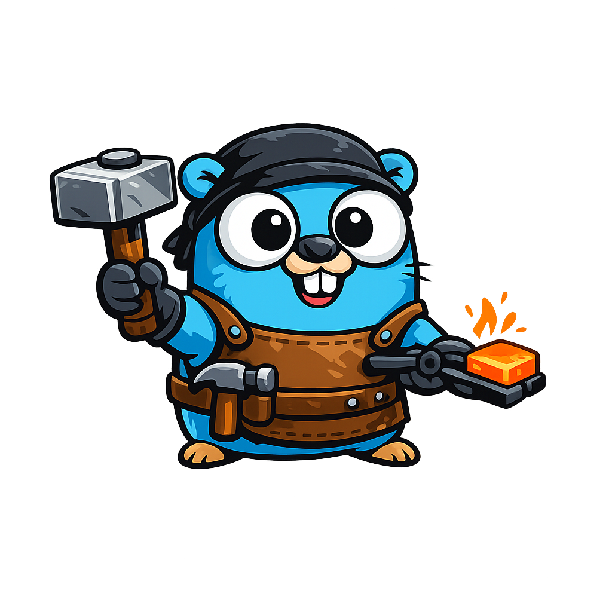

Docker
How to run Foundry in Docker for local development and with the stricter production-oriented compose setup.

Foundry
Foundry is a Markdown-first CMS written in Go with file-based content, themes,
first-class compiled plugins, and out-of-process RPC plugins. Here you can find the
project docs, the CLI contract, and the latest HTML coverage report generated from
main.
All the documentation you'll need to deploy Foundry, create new plugins, themes, and more.
How to run Foundry in Docker for local development and with the stricter production-oriented compose setup.
A short overview of the project, core directories, common commands, and the config areas most people need first.
A practical map of the runtime flow and the packages that matter most when you start reading or changing the code.
The canonical guide to theme-owned field contracts, shared custom fields, template access, migration, and admin editing behavior.
A full reference for content/config/site.yaml, including every config
group, every supported key, and how each setting is used.
The official Admin SDK and Frontend SDK, their capability model, public API surfaces, and example usage.
How to build first-class Go plugins or out-of-process RPC plugins, define metadata, declare permissions, register hooks, and validate the result.
How to scaffold a theme, structure layouts and partials, satisfy the slot contract, and validate the finished package.
The CLI UX contract, including command wording, output conventions, validation scope, and mutation guidance.
The HTML coverage report is generated on pushes to main and published
into this site by CI.
Pages and posts live in files with frontmatter, version cleanly in Git, and can be extended with taxonomies, fields, and language-aware routing.
Rendering lives in themes and extension logic lives in plugins, with explicit hook points, a validated slot contract, and generated plugin registration.
Admin frontends, future React admin implementations, plugin UIs, and JS-powered themes can target stable Foundry SDKs instead of private fetch logic.
The dependency graph tracks taxonomy outputs as well as document outputs, which improves incremental rebuild targeting.
The admin surface includes a Quill-powered rich text editor for pages and posts, plus fullscreen Zen mode, image uploads into Foundry media, restore-preview workflows, audit logs, a command palette, and a runtime/debug dashboard with authenticated pprof access.